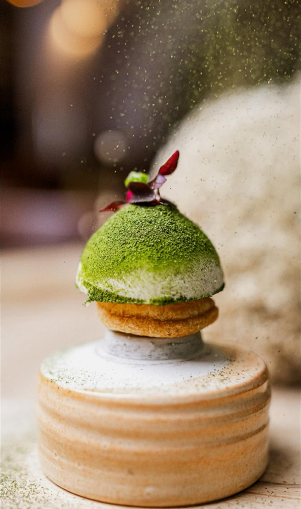
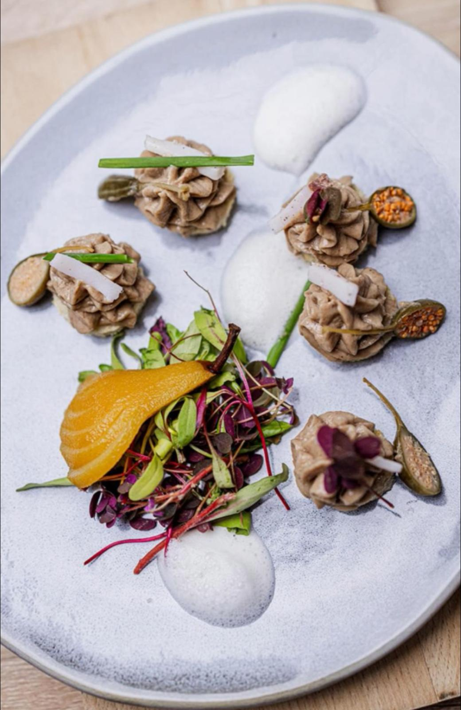

I
Il primo tempo
è la materia prima.
è la materia prima.
Ogni prodotto viene selezionato con disciplina. Solo ciò che ha identità, stagionalità e profondità entra in cucina. Tutto il resto rimane fuori.

II
Il secondo tempo
è la tradizione.
è la tradizione.
Viene studiata con rispetto, non citata. È la memoria di una famiglia, di un territorio, di una tecnica. La tradizione di casa Morucci non è un vincolo. È la base da cui si costruisce.

III
Il terzo tempo
è l'innovazione.
è l'innovazione.
È la firma. Il gesto di Andrej, lo Chef. È la ricerca, la misura, l'evoluzione. L'innovazione non rompe ciò che è stato. Lo porta avanti, con precisione.